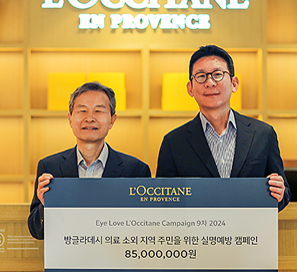

From heart to story
하트 스토리
하트-하트재단과 만들어가는,
더불어 함께하는 세상의 수많은 이야기들
-

SK하이닉스와 함께하는 2024 SK
하트-하트재단과 SK하이닉스가 함께하는 전국 아동·청소년 대상 소프트웨어
more -

8년째 이어지는 록시땅과 하트-하트
8월 22일, ‘아이 러브 록시땅(EYE LOVE L’OCCITANE) 2024’ 실명예방 캠페인을 통해
more -

캄보디아, 비감염성 질환(NCD)
하트-하트재단 캄보디아 지부는 캄보디아 바탐방 지역에서 비감염성 질환(Non-Communicable Diseases)
more -

LG디스플레이 임직원과 가족이
하트-하트재단은 시각장애아동에게 꿈과 비전을 제시하고 책 읽을 권리를 어쩌구 저쩌구
more